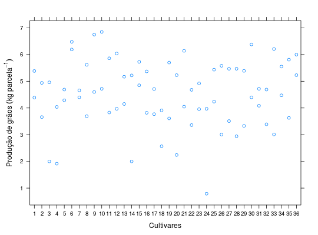
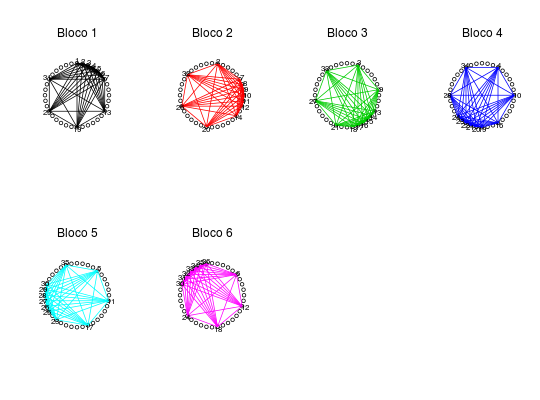

Experimento conduzido na EMBRAPA Milho e Sorgo em 1997, envolvendo a avaliação de produção de grãos de 36 cultivares de milho, conduzido no delineamento de látice quadrado parcialmente balanceado.
Um data.frame com 72 observações e 5 variáveis, em que
bloccultprodRAMALHO et al. (2005), pág. 171.
library(lattice) data(RamalhoEg11.4)#> Warning: data set ‘RamalhoEg11.4’ not foundstr(RamalhoEg11.4)#> 'data.frame': 72 obs. of 3 variables: #> $ bloc: Factor w/ 6 levels "1","2","3","4",..: 1 1 1 1 1 1 2 2 2 2 ... #> $ cult: Factor w/ 36 levels "1","2","3","4",..: 1 2 3 4 5 6 7 8 9 10 ... #> $ prod: num 4.39 3.66 2 1.92 4.69 ...addmargins(xtabs(~cult + bloc, data = RamalhoEg11.4))#> bloc #> cult 1 2 3 4 5 6 Sum #> 1 2 0 0 0 0 0 2 #> 2 1 1 0 0 0 0 2 #> 3 1 0 1 0 0 0 2 #> 4 1 0 0 1 0 0 2 #> 5 1 0 0 0 1 0 2 #> 6 1 0 0 0 0 1 2 #> 7 1 1 0 0 0 0 2 #> 8 0 2 0 0 0 0 2 #> 9 0 1 1 0 0 0 2 #> 10 0 1 0 1 0 0 2 #> 11 0 1 0 0 1 0 2 #> 12 0 1 0 0 0 1 2 #> 13 1 0 1 0 0 0 2 #> 14 0 1 1 0 0 0 2 #> 15 0 0 2 0 0 0 2 #> 16 0 0 1 1 0 0 2 #> 17 0 0 1 0 1 0 2 #> 18 0 0 1 0 0 1 2 #> 19 1 0 0 1 0 0 2 #> 20 0 1 0 1 0 0 2 #> 21 0 0 1 1 0 0 2 #> 22 0 0 0 2 0 0 2 #> 23 0 0 0 1 1 0 2 #> 24 0 0 0 1 0 1 2 #> 25 1 0 0 0 1 0 2 #> 26 0 1 0 0 1 0 2 #> 27 0 0 1 0 1 0 2 #> 28 0 0 0 1 1 0 2 #> 29 0 0 0 0 2 0 2 #> 30 0 0 0 0 1 1 2 #> 31 1 0 0 0 0 1 2 #> 32 0 1 0 0 0 1 2 #> 33 0 0 1 0 0 1 2 #> 34 0 0 0 1 0 1 2 #> 35 0 0 0 0 1 1 2 #> 36 0 0 0 0 0 2 2 #> Sum 12 12 12 12 12 12 72xyplot(prod ~ cult, data = RamalhoEg11.4, xlab = "Cultivares", ylab = expression("Produção de grãos"~(kg~parcela^{-1})))k <- nlevels(RamalhoEg11.4$cult) a <- seq(0, 2 * pi, length.out = k + 1)[-(k + 1)] par(mfrow = c(2, 4)) col <- 1 for (b in levels(RamalhoEg11.4$bloc)) { plot(sin(a), cos(a), asp = 1, xlim = c(-1.1, 1.1), ylim = c(-1.1, 1.1), axes = FALSE, xlab = NA, ylab = NA) mtext(paste("Bloco", b)) i <- unique(as.integer(subset(RamalhoEg11.4, bloc == b)$cult)) cb <- combn(x = i, m = 2) segments(x0 = sin(a[cb[1, ]]), y0 = cos(a[cb[1, ]]), x1 = sin(a[cb[2, ]]), y1 = cos(a[cb[2, ]]), col = col) text(x = 1.08 * sin(a[i]), y = 1.08 * cos(a[i]), labels = levels(RamalhoEg11.4$cult)[i]) col <- col + 1 }